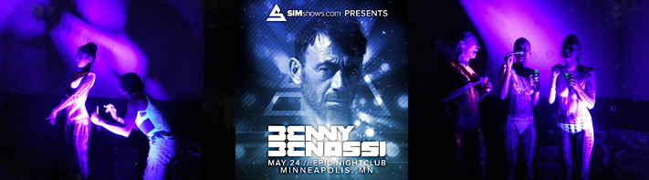

Zander
and Norell
Designer Jacob Alexander Figueroa went by the names of Jacob Alexander and did work as Virtual Warrior Ink vw|NK Agency, Karnak Gallery, the artist Xander / Zander, and is perhaps best known for his body painting and mixed media artworks.
Zander was an influential body painter for over a decade, from 2000 - 2012 and beyond.

Some of the artists Jacob Alexander body painted for and with include world renowned Paul Van Dyk renowned Benny Benassi at Epic Nightclub in downtown Minneapolis  and countless concerts, events, festivals, conventions, and private parties.

Zander and Norell had met under the most artistic of terms, with him being his rock star body painter self, and Norell modeling as one of his many human canvases during an art exhibition titled “High Seas Heaven”, which took place at world famous techno producer and musician, DVS1's studio.

Norell was transformed into a mermaid that night, one of her childhood dreams; and they have worked alongside each other ever since, dating as far back as that first night working together in August of 2010.
They have co-produced several creative projects since coming together, including the Edible Art Series, where Norell photographed Zander provocatively with other models. Some of the photographs later were exhibited at FIMA in Montreal to over 70,000 art lovers with fine artist Gulay Alpay and celebrity fashion designer Emre Erturk.

Individually, they are strong. Together, they are dynamite. Zander and Norell, the power duo in multimedia artistry.
Norell was always pursuing her dreams of singing in some form or another.
 She was active in choir throughout her schooling and collegiate career, and also participated in choir post-graduation with songstress Emily Colay's all-women's choir, Cantara in 2012.
She was active in choir throughout her schooling and collegiate career, and also participated in choir post-graduation with songstress Emily Colay's all-women's choir, Cantara in 2012.
She performed regular open mic events and frequented karaoke hotspots, often having the DJs following her on her way out, encouraging her to come back often.

Pursuing modeling as a creative outlet was how she came to meet Zander back when she agreed to model for an event on a whim, and since a long time model and muse to Jacob Alexander, Norell coproduced alongside him the X Fashion Show in 2011.

Back then, Norell was but a solo artist dreaming of making music professionally, who took to the stage with her naked voice, singing a cappella and debuting her very first original song, “Adaptation”, along with a couple of songs in tribute to Amy Winehouse, who had passed around the time.

Norell worked alongside Zander with Sexapalooza at the Convention Center in downtown Minneapolis, MN,
 and Sexapalooza at the Oregon Convention Center in Portland, OR;
and Sexapalooza at the Oregon Convention Center in Portland, OR;
 to assisting, modeling, and photographing Zander's live body painting on stage with musical acts R2D2, Deadmaus, and other headliners at Summerset Music and Camping Festival 2012 in Somerset, WI;
to assisting Zander during Twin Cities Pride Festival in both 2013 and 2014, to name a few productions.
to assisting, modeling, and photographing Zander's live body painting on stage with musical acts R2D2, Deadmaus, and other headliners at Summerset Music and Camping Festival 2012 in Somerset, WI;
to assisting Zander during Twin Cities Pride Festival in both 2013 and 2014, to name a few productions.


Norell also helped in getting several merchandise items featuring artworks by Jacob Alexander on display and for sale in the Minneapolis Skyway in downtown Minneapolis, MN.


Both a fan of improv, Zander and Norell have been known to do spontaneous performance art in public places
 and even artistic stunts in busy streets with cars and passerby.
and even artistic stunts in busy streets with cars and passerby.
It should come with little surprise, then - with Norell's love for singing, and Zander's history of violin and musical ventures - that the two would some day spontaneously jam and birth a band in St. Paul, MN.
Check out The Band Famous® Official Website!
Get TBF's Debut , Last Words FREE!


The syngery had between Zander and Norell combined with their first meeting with Terrance Schubring, could do nothing but make the band famous. They even discovered that Terry had been an audience member at the X Fashion Show, so in a way, the first meeting and birth of the band seem to come around full circle.
The Band Famous®, also known as Band Famous, The Band Famous™, and TBF for short, features Norell as singer, lyricist, and co producer, and Zander as multi-instrumentalist and producer.

They have had many accomplishments and quite a bit of recognition despite only officially performing as a band in a public venue one time, at their debut app release party in the Annex Room at the Gay 90s in downtown Minneapolis on Friday the 13th, in June 2014.

Both Zander and Norell were regular models on the scene in the Twin Cities, and Suzann Beck, an artist who worked with Norell later featured an oil portrait she painted of the soulful singer. The painting was on display at Suzann Beck's art show at the Metro Gallery next to the Walker Art Center during the Fall of 2015.
Zander and Norell had moved to NYC in September 2014 where they spent a year. While living in NYC, TBF continued garnering support in the Midwest, including from Twin Cities very own Atmosphere, who even personally tweeted out the band's Kickstarter project when they had attempted to crowdsource to help with the completion of making their native iPhone App "The Band Famous" available cross-platform to the Android Google Play Store, as well as finishing their 2nd album and other exciting projects underway.

Author Jay Gabler at Minnesota Public Radio and 89.3FM The Current also did an exceptional feature on the band.
WeekOnLaRadio, a radio station broadcasting to all of New York, as well as to Mexico, Argentina, and the Dominican Republic showed wonderful hospitality to the band. Hosts model/actor Jack Ramos, and actress/model Bianka Gomez interviewed The Band Famous® live on the show in November 2014.

Norell's modeling portfolio, which Zander nearly built single-handedly - directing the styling of her hair and wardrobe in many photo shoots - caught the eye of celebrity hair stylist Ted Gibson. Norell modeled for him in January 2015, drastically changing the cut and color of her hair.

Norell almost went on NBC's The Voice following an audition at the Javitz Center in Manhattan that same month, but instead decided to go with a more organic route. Zander and Norell were ready to take the west coast by storm after connecting with actor and comedian Tom Green, who invited the band to perform on his Webovision show in Los Angeles. After they made it to LA Tom got pretty busy with his stand up comedy tour, but they remain in communication and the future, an open canvas.

Five-Time-Grammy-Winning Artist BJ Thomas downloaded "The Band Famous" and left a review on the iPhone App Store under alias "Raindrops Mann", calling The Band Famous® his new favorite music.
The moral of the story? Zander and Norell are very happy making music, art, and apps together, and as such, they will always make the band famous.
Listen To The Music
Download the app today!